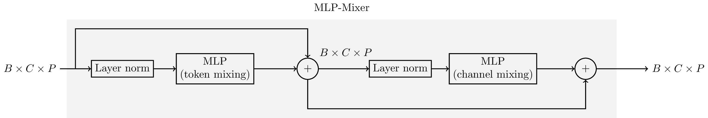

AI - MLP-Mixer
Table of Contents
Multi-layer perceptron mixer (MLP-Mixer) is a novel neural network model, which attracts the attentions of both academic circle and industrial area. Besides the proposal paper, I found another blog post providing an excellent illustration.

Figure 1: A MLP-Mixer layer
The structure of MLP-Mixer can be shown in Figure 1.
- The input and output tensors have the same size, denoted by \(B\times C\times P\), where \(B\) is the batch size, \(C\) is the number of channels, \(P\) is the size of each patch. Usually, the patch size is a product of patch size in each dimension. E.g., a 2-D image of size \(H\times W\) can be partitioned into a multiplicity of patches, with each of size \(P = P_h \times P_w\). Then different patches correspond to different channels, i.e., \(C = \dfrac{H}{P_{h}} \cdot \dfrac{W}{P_{w}}\). Without loss of generality, we stretch each patch into 1-D irrespecitve of its dimensions.
- Just as its name indicates, each MLP-Mixer layer has two MLP modules, targeting for intra-patch feature extraction, a.k.a. token mixing, and inter-patch feature processing, a.k.a. channel mixing, respectively. Of course, token mixing and channel mixing operates along the dimension of patch (of size \(P\)) and channel (of size \(C\)), respectively.
Generally, a MLP module is an artificial neural network comprising an input layer, a plurality of hidden layers, and an output layer. A typical MLP module can be shown in Figure 2, which is comprised of 2 full-connection (FC) layers seperated by a non-linear activate function, e.g., Gaussian error linear unit, (GeLU), which has been widely used in natural language processing (NLP).
\begin{align*} \mathrm{GeLU}(x) = x \cdot p(X < x), \end{align*}where \(p(X < x)\) is the probability of a Gaussian distributed stochastic variable \(X\sim \mathcal{N}(0, 1)\) less than \(x\).
- There is a layer norm module preceding each MLP module. The normalization is performed within each sample (e.g., \(C\times P\)), different from batch norm operating across the samples within each batch (e.g., \(B \times P\)).
Figure 2: An example of MLP
References
- Ilya Tolstikhin and Neil Houlsby and Alexander Kolesnikov and Lucas Beyer and Xiaohua Zhai and Thomas Unterthiner and Jessica Yung and Andreas Steiner and Daniel Keysers and Jakob Uszkoreit and Mario Lucic and Alexey Dosovitskiy (2021). "MLP-Mixer: An all-MLP Architecture for Vision".
- https://towardsdatascience.com/mlp-mixer-is-all-you-need-20dbc7587fe4